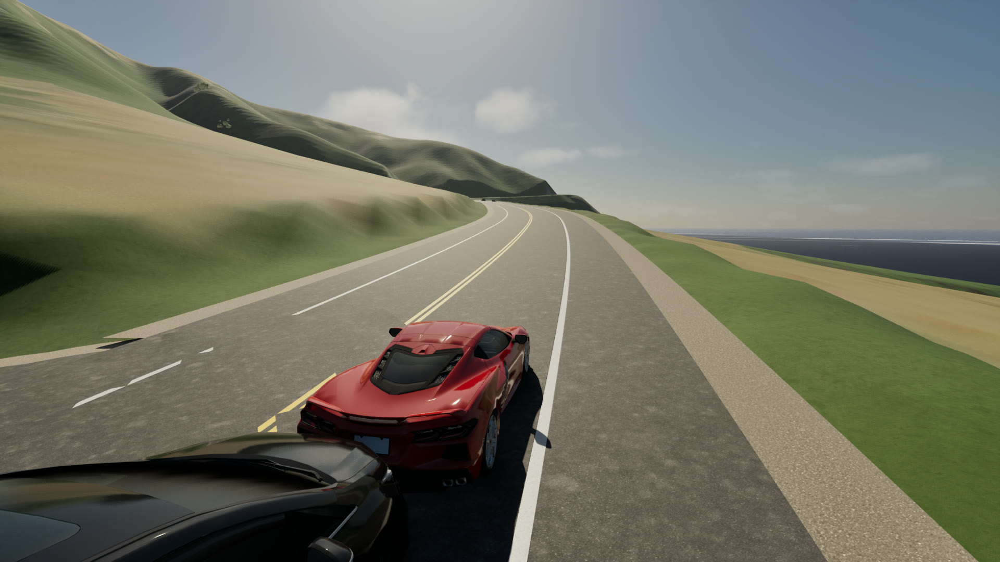
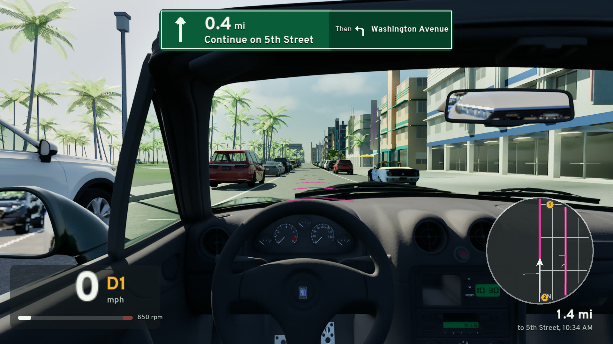
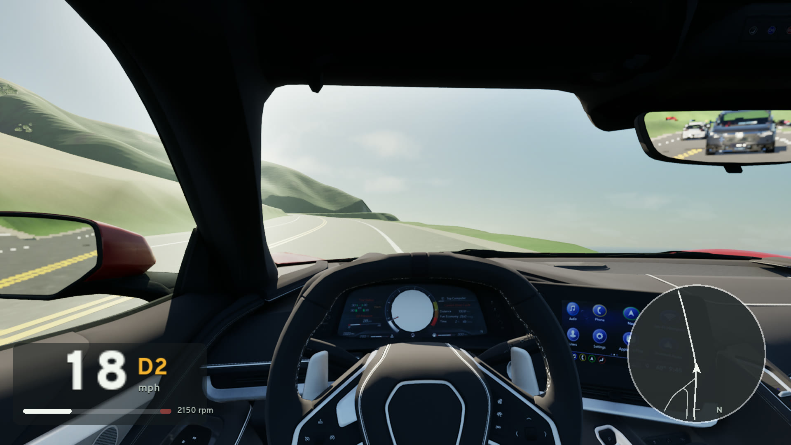
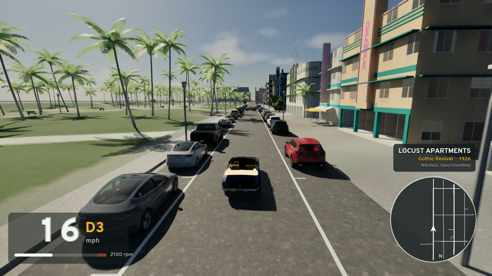
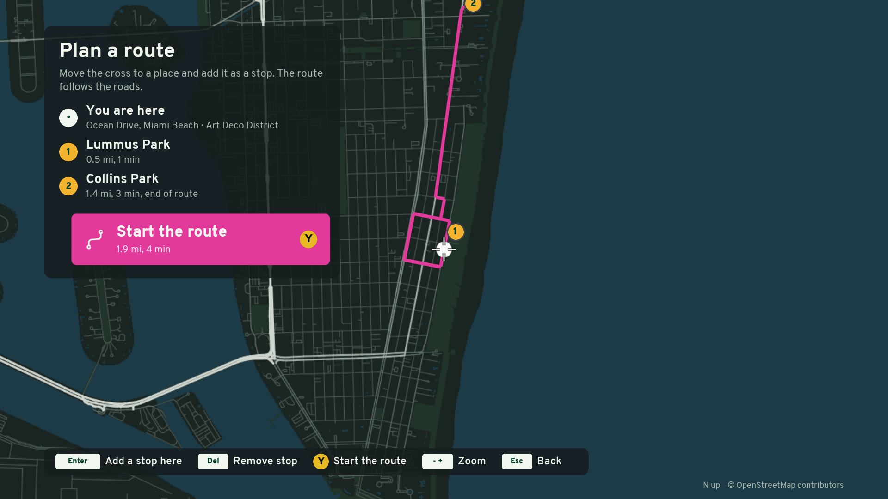
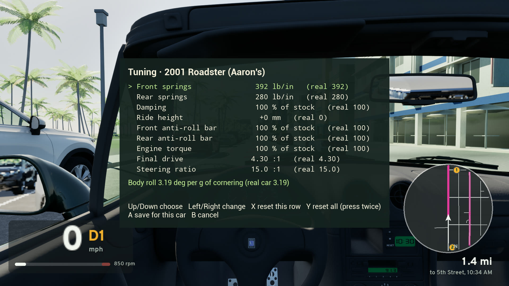

What SimCruise is
SimCruise puts you behind the wheel anywhere in the United States. Pick a famous road or type your own street, and the game builds it as you drive, from free public map, elevation and aerial data. Each car is physically modelled and calibrated against published road-test numbers: the Mazda MX-5 Miata, a 1965 Ford Mustang, a Corvette Stingray (C8) and more.
It is a driving simulator, not a racing game: there are no races or opponents. You drive real roads at your own pace, with traffic, a GPS, the real sun and sky for the place and time, and the live weather.
No account, no API keys, no subscription, no ads and no telemetry. The game and all of its source code are free under the MIT License.
Screenshots






Screenshots from the 2.0.2 build, Ultra preset, 1920 x 1080. Map data © OpenStreetMap contributors.
Famous roads to drive
Open the pause menu and choose Famous roads. The GPS takes you from the start to the end of the road.
| Road | What it is | Length |
|---|---|---|
| Tail of the Dragon, US 129 North Carolina and Tennessee | 318 curves in 11 miles, from Deals Gap to the Tabcat Creek bridge | 10.8 mi |
| Big Sur, California 1 Pacific Coast Highway | Cliffs over the Pacific, from Bixby Creek Bridge to Big Sur | 13.2 mi |
| Monument Valley, US 163 Utah | The straight road to the buttes, from Forrest Gump Point | 6.2 mi |
| Ocean Drive, Miami Beach Florida | Art Deco hotels and the beach, from Lummus Park to Collins Park | 1.3 mi |
These are only a start. Press / to search for any other US place and drive the real roads there.
Features
Real places from public data
Roads, terrain, buildings, trees and water from OpenStreetMap, USGS and Overture, streamed in tiles around the car.
Cars that drive like the real ones
Physics at 360 Hz with tyres, suspension, engine, clutch, gearbox and differential from published specifications, checked against magazine 0–60 mph, braking and skidpad figures.
Traffic and a GPS
Cars drive their lanes at the posted speed and stop at junctions. The GPS routes you on the real roads, with a turn sign and a round map.
The real sky and weather
The sun and moon where they are at that place and time, with the live weather, tide and real aircraft overhead from free public feeds.
Wheel, controller or keyboard
USB wheel, Xbox controller or keyboard, with rumble, a manual gearbox, a tuning menu, and seat, hood and chase cameras.
Open data, open code
Every data source is free and keyless. The full C++ source is on GitHub under the MIT License, for anyone to build and change.
Questions
- Is SimCruise free?
- Yes. The game is free and open source (the code is under the MIT License). There is no account, no API key, no subscription, no ads and no telemetry.
- What do I need to play?
- 64-bit Windows 10 or 11, a DirectX 12 graphics card with 6 GB of video memory (for example an NVIDIA GTX 1660 or AMD RX 5600), 8 GB of memory, 3 GB of disk and an internet connection for the map data. See the install guide. There is no macOS or Linux build yet.
- Can I drive my own street?
- Yes, if it is in the United States. Press / and type the address or the place name. The detail depends on how well OpenStreetMap maps that place.
- Is it a racing game?
- No. SimCruise is a driving simulator: you drive real roads with realistic car physics, a GPS and traffic. It has no races or opponents.
- Can I use a steering wheel?
- Yes. A USB wheel with a Windows GameInput driver, an Xbox controller and the keyboard all work. See the controls.
- Can I build it or change it?
- Yes. The full source of this open-source Unreal Engine driving simulator is on GitHub. Read CONTRIBUTING.md before you send a pull request.